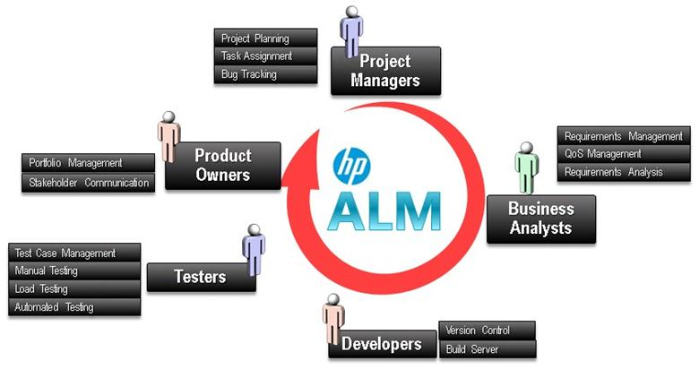
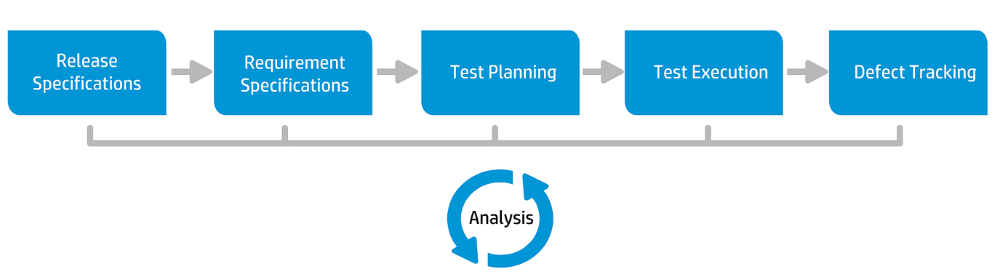

HP ALM
ALM is a web based tool that helps organizations to manage the application lifecycle right from project planning, requirements gathering, until Testing & deployment, which otherwise is a time consuming task. ALM also provides integration to all other HP products such as UFT and Load Runner.

The various stakeholders involved in a typical project are –
- Developer.
- Tester.
- Business Analysts.
- A deploy job will be displayed on dashboard.
- Project Managers.
- Product Owners.
HP ALM Overview
HP Application Lifecycle Management (ALM) empowers organizations to manage the core application lifecycle, from requirements through deployment, granting application teams the crucial visibility and collaboration needed for predictable, repeatable, and adaptable delivery of modern applications.
Application lifecycle management is a complex process. Whether your organization is predominantly Agile or you are using both iterative and sequential methods, the aim of effective lifecycle management is greater predictability, heightened repeatability, improved quality, and a ready accommodation of change. Understanding project milestones, deliverables, and resource and budget requirements and keeping track of project health, standards and quality indicators, allow delivery managers to achieve these objectives.
ALM simplifies and organizes application management by providing you systematic control over the process. It helps you create a framework and foundation for your application lifecycle management workflow in a central repository.
HP ALM Flow
The ALM basic flow includes the following phases:

Release Specifications
Develop a release-cycle management plan to help you manage application releases and cycles more efficiently. You can track the progress of an application release against your plan to determine whether your release is on track.
Requirement Specifications
Define requirements to meet your business and testing needs. You can manage the requirements and conduct multi-dimensional traceability between requirements, tests, and defects, across multiple releases and cycles. ALM provides real-time visibility of requirements coverage and associated defects to evaluate quality and business risk.
Test Planning
Based on the project requirements, you can build test plans and design tests. ALM provides a repository for both manual and automated tests.
Test Execution
Create a subset of the tests in your project designed to achieve specific test goals. ALM supports sanity, functional, regression, and advanced testing. Execute scheduled tests to diagnose and resolve problems.
Lab Management: You can run server-side execution Functional test sets that can be run immediately or scheduled for the future. Functional test sets are run without user intervention and can be run as a part of build verification suite in order to automate and streamline the deployment and testing process.
Defect Tracking
Submit defects and track their repair progress. Analyzing defects and defect trends helps you make effective "go/no-go" decisions. ALM supports the entire defect lifecycle - from initial problem detection through fixing the defect and verifying the fix.
Analysis
Throughout the application lifecycle, you can monitor and control strategic points by generating reports and graphs.
HP ALM Features
1. OpenRelease Tracking:-ALM features a system for organizing and tracking application releases, enabling you to align your business priorities and quality expectations with your project requirements, tests, and defects. ALM helps you make more informed release decisions with real-time key performance indicators (KPIs).
2. OpenRequirements and Tests:-ALM helps you define and maintain a repository of requirements and tests. Requirements help ensure that business and testing needs are covered. Tests can then be automatically generated from these requirements to ensure the correct aspects of the application are being tested. To meet the various goals of a project, you can organize the tests in your project into unique groups. ALM provides a method for scheduling and executing tests, collecting test results, and analyzing the data.
3. OpenDefect Tracking:-
Analyzing defects and defect trends helps you make effective "go/no-go" decisions. ALM features a system for tracking defects, enabling you to monitor defects from initial detection until resolution. It also allows you to share defects across projects, reducing risk by helping developers find, prioritize, and resolve defects sooner. A centralized defect repository also enables reporting of aggregated defect status and trends across projects.
4. OpenAnalysis Tools:-
The ability to track progress throughout the application lifecycle process is vital to predictability. ALM provides tools for analyzing each phase of the process including specific instrumentation for Agile projects (for example, burn-up and burn-down charts). You can generate interactive graphs that demonstrate a wide variety of business performance perspectives, or define reports with any cross-section of data. You can also monitor multiple business metrics, by arranging multiple graphs alongside each other in a single view.
5. OpenAsset Libraries:-
ALM supports sharing and reuse of asset libraries across projects. Sharable libraries help you manage initiatives with multiple applications to verify that changes to one application do not negatively impact another application. They also help to drive greater consistency and repeatability, by empowering asset reuse. Specific changes can be applied to the shared assets for each project while allowing the library to maintain its integrity.
6. OpenALM Integrations:-
ALM offers integration with HP tools (for example, Unified Functional Testing and LoadRunner) as well as third-party and custom testing tools, and requirement and configuration management tools. ALM communicates with the testing tool of your choice, providing you with a complete solution to fully automated application testing.
The HP Project and Portfolio Management (PPM) Center software offers your executives and PMOs a dashboard view into your portfolio, demand, in-flight projects, and programs across the organization enabling smart portfolio investment decisions.
7. OpenPerformance Center Functionality:-
ALM includes functionality enabling you to manage all aspects of a large-scale performance testing project, including resource allocation and scheduling, from a centralized location accessible through the Web. ALM helps streamline the testing process, reduce resource costs, and increase operating efficiency.
8. OpenLab Management Functionality:-
ALM includes functionality enabling you to manage resources which you can use to execute tests on remote hosts. ALM helps automate the deployment and testing process, improving reliability and convenience. For details, see the ALM Lab Management Help.
Key points-
- It enables all the stakeholders to interact and coordinate, to achieve the project goals.
- It provides robust tracking & reporting and seamless integration of various project related tasks.
- It enables detailed project analysis and effective management.
- ALM can connect to our email systems and send emails about any changes(like Requirement change, Defect raising, etc..) to all desired team members
|